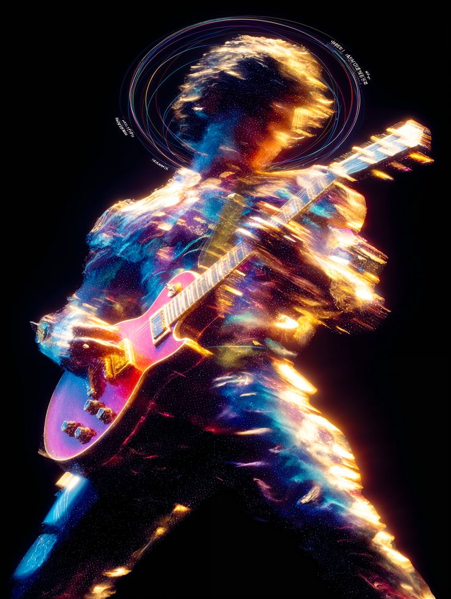
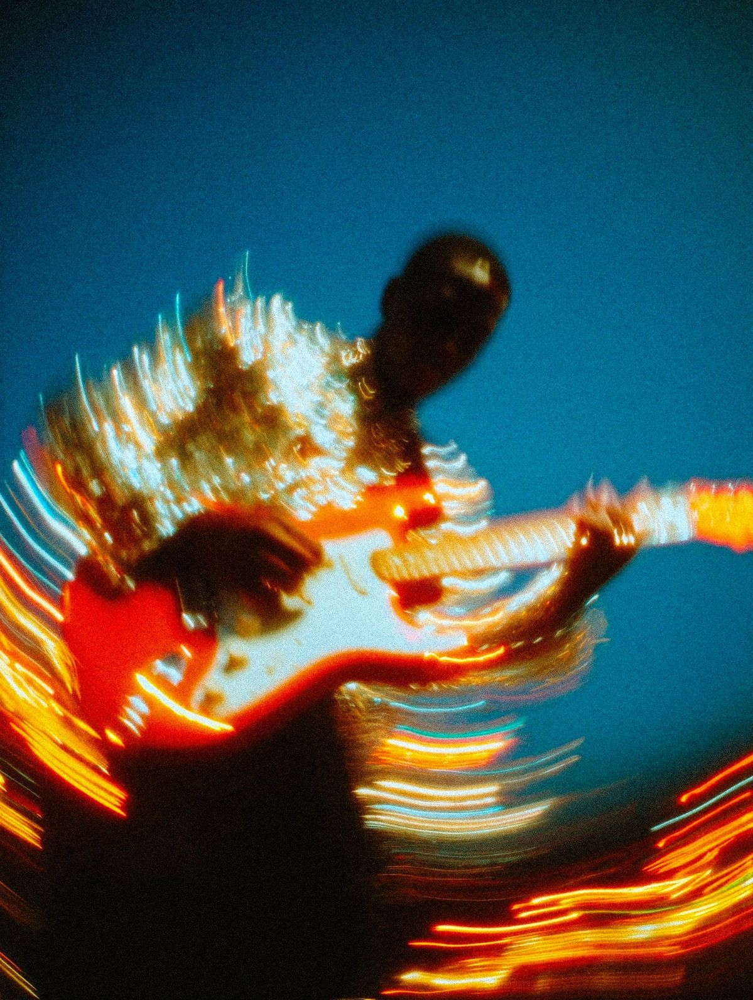
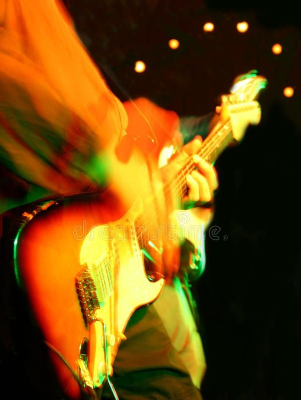
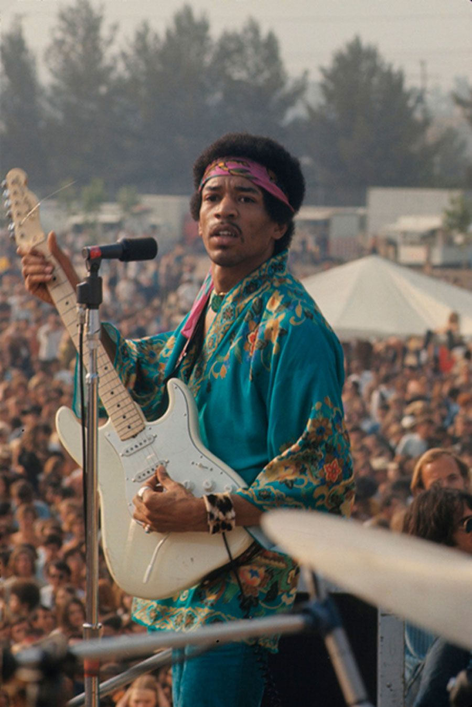
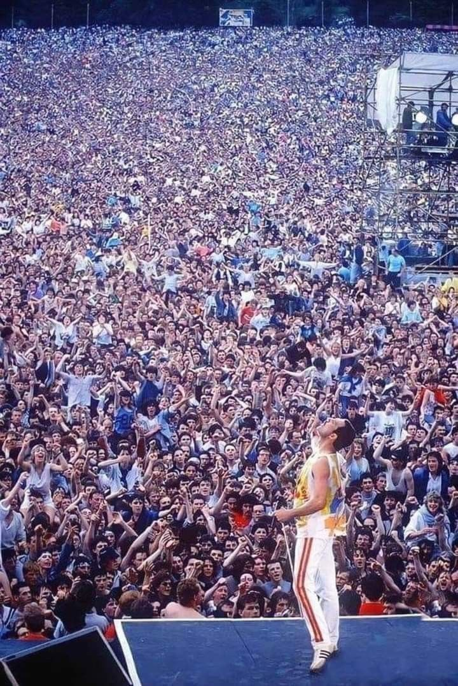
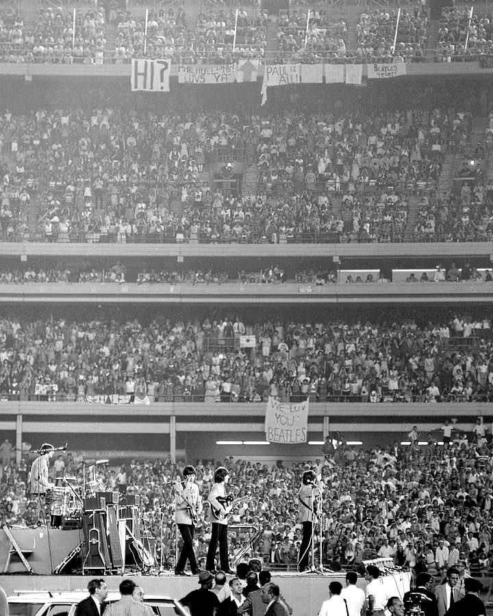
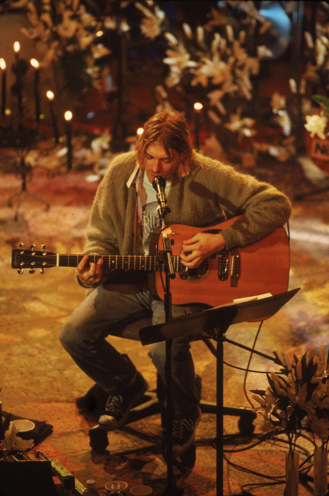
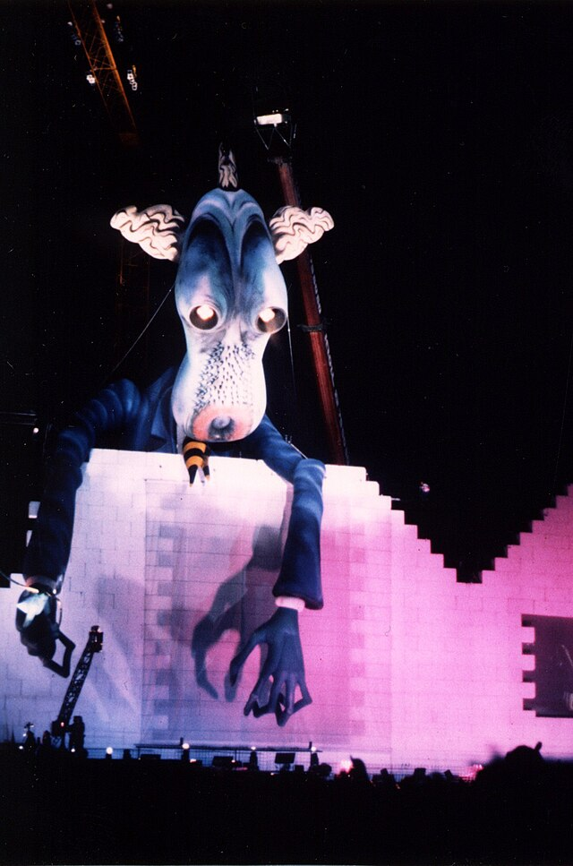

El rock and roll surgió en la década de 1950 como una potente amalgama de géneros folclóricos estadounidenses, fusionando la estructura del rhythm and blues, el country y el blues con influencias de góspel y doo wop. Sus máximos exponentes definieron la era: Elvis Presley como la figura más popular, Chuck Berry transformando la guitarra y Jerry Lee Lewis el piano, acompañados por pioneros esenciales como Little Richard, Buddy Holly y Fats Domino, quienes sentaron las bases de un sonido de ritmo marcado que revolucionaría la cultura popular.
Etimológicamente, el término proviene de la jerga afroamericana de principios del siglo XX, con connotaciones sexuales y referencias a movimientos físicos de vaivén (rocking) y alabeo (rolling). Aunque la RAE distingue actualmente entre el "rock and roll" clásico y el "rock" como género derivado, muchos artistas contemporáneos continúan usando la etiqueta original por considerarse herederos directos. El locutor Alan Freed fue crucial al adoptar esta expresión para describir el estilo en la radio, aunque el término ya existía en letras de canciones de blues desde finales de los años 30.
La expresión no fue un invento de los años 50; ya aparecía en temas como Rock and rolling (1939) y fue título de varias canciones de R&B a finales de los 40, llegando incluso al cine en 1950 con el filme Wabash Avenue. Alan Freed, impulsado por Leo Mintz, utilizó el nombre para reempaquetar la música negra para una audiencia blanca y diversa, apropiándose de una frase que era común en las letras que difundía. Esta estrategia permitió que el género cruzara barreras raciales bajo una denominación que ocultaba sus orígenes segregados.
Las raíces musicales del género son profundas, remontándose a los tiempos de la esclavitud, donde los cánticos religiosos y de trabajo evolucionaron hacia el blues y posteriormente se electrificaron. La influencia de músicos blancos y la incorporación de instrumentos como la guitarra eléctrica transformaron el rhythm and blues —padre directo del género— en algo nuevo. Muddy Waters es citado frecuentemente como quien "pavimentó" el camino, uniendo elementos de boogie-woogie, jazz y folk apalache en una mezcla explosiva.
Desde una perspectiva sociológica, el rock and roll nació porque los adolescentes estadounidenses de los 50 buscaban sensaciones nuevas y una identidad propia. El uso del término sirvió también para "blanquear" comercialmente el rhythm and blues, distanciándolo de los conflictos raciales de la época para facilitar su consumo masivo. Esto permitió la entrada de cantantes blancos y la consolidación de un mercado juvenil unificado, donde la música actuaba como un puente cultural que desafiaba la segregación existente.
El origen cronológico exacto es objeto de debate, situándose a menudo en 1954 con Rock Around the Clock de Bill Haley o las sesiones de Elvis Presley en Sun Records, precursoras del rockabilly. Sin embargo, grabaciones anteriores como The Fat Man (1949) de Fats Domino o Rocket 88 (1951) de Ike Turner sugieren un nacimiento más temprano. Independientemente de la fecha, figuras como Carl Perkins, Gene Vincent y Eddie Cochran terminaron de cimentar este fenómeno musical.



El epicentro de este terremoto cultural fue Memphis, Tennessee, donde los estudios Sun Records capturaron la chispa inicial que incendiaría al mundo. Desde el sur de Estados Unidos, la segregación musical comenzó a romperse en pequeños clubes, exportando una fiebre rítmica que cruzaría el Atlántico rápidamente hacia una Inglaterra que miraba asombrada al nuevo continente.
El sonido era crudo y visceral, definido por guitarras de cuerpo hueco y el innovador uso del eco "slapback" en las voces para dar profundidad. No hacían falta grandes producciones; bastaba con un contrabajo golpeado con fuerza y un amplificador a punto de saturar para crear una cadencia frenética que incitaba al baile desenfrenado y prohibido.
Los artífices de este cambio de paradigma fueron figuras inmortales que definieron la actitud rebelde del género desde sus cimientos. Elvis Presley se coronó como el rey indiscutible gracias a su carisma escénico, mientras Chuck Berry establecía el vocabulario esencial de la guitarra eléctrica y Little Richard aportaba una furia vocal nunca antes vista.
Junto a ellos, pioneros como Buddy Holly enseñaron al mundo el formato clásico de banda de rock, componiendo sus propios éxitos. Fue una era de descubrimiento puro, donde la mezcla de country y rhythm and blues dio a luz a una juventud que, por primera vez, tenía una música propia para diferenciarse de la generación de sus padres.
El eje del mundo musical se dividió entre el vibrante "Swinging London" en el Reino Unido y la explosión hippie de San Francisco. Fue una época dominada por festivales masivos como Woodstock, donde la música dejó de ser solo baile para convertirse en un vehículo de expansión mental, protesta política y una experimentación artística sin precedentes.
La tecnología transformó el audio radicalmente con la aparición de pedales de efectos como el fuzz y el wah-wah, que distorsionaban la realidad sonora. Los estudios de grabación pasaron a ser instrumentos en sí mismos, permitiendo capas complejas y la introducción de instrumentos exóticos como el sitar, definiendo el sonido psicodélico y envolvente.
Cuatro nombres cambiaron la historia: The Beatles elevaron el rock a la categoría de arte sofisticado, mientras The Rolling Stones aportaron la suciedad y el peligro del blues. Jimi Hendrix reinventó la guitarra eléctrica con un virtuosismo sónico alienígena y Bob Dylan electrificó la poesía folk, dándole al rock una conciencia lírica profunda.
La "Invasión Británica" no solo conquistó las listas de éxitos, sino que redefinió la moda y la estética juvenil global. Desde los trajes elegantes hasta las camisas de flores, la música dictaba el estilo de vida, cerrando la década con una sensación de que el rock podía cambiar el mundo y detener guerras a través de sus mensajes.
El rock se hizo masivo y grandilocuente, llenando estadios deportivos alrededor del globo con escenarios gigantescos y pirotecnia. Fue la era de los excesos y los jets privados, creando una dicotomía fascinante entre el virtuosismo del rock progresivo, que buscaba la complejidad, y la respuesta del punk callejero, que exigía velocidad y simplicidad.
El sonido se volvió gigantesco gracias a las paredes de amplificadores Marshall y las guitarras Gibson Les Paul, cimentando el "heavy" rock. Sin embargo, también surgieron los sintetizadores analógicos Moog para crear atmósferas espaciales, mientras que el punk recuperaba la crudeza con acordes de quinta distorsionados y baterías aceleradas sin pulir.
Las bandas de esta época son verdaderos colosos de la industria: Led Zeppelin definió el hard rock con su misticismo y potencia sexual. Pink Floyd llevó el género a viajes conceptuales y sonoros inmersivos, y Queen se atrevió a mezclar la ópera con el rock de estadio, creando himnos que todavía resuenan en todo el mundo.
Como contrapeso a estos gigantes, The Ramones en Nueva York y los Sex Pistols en Londres recordaron que la actitud valía más que la técnica. Demostraron que cualquiera podía montar una banda con tres acordes y mucha rabia, sembrando las semillas de la independencia musical que florecería en las décadas posteriores.
La cultura visual tomó el mando transformando la música en un espectáculo multisensorial, con el Sunset Strip de Los Ángeles como capital del exceso. MTV cambió las reglas del juego para siempre: ya no bastaba con sonar bien, había que tener una imagen impactante para entrar en los salones de millones de adolescentes, priorizando el videoclip como el formato artístico principal.
El sonido se volvió inconfundible gracias a baterías con "gated reverb", ese efecto explosivo y cortado que definió el ritmo de la década. Las guitarras se bañaban en pedales de chorus para obtener tonos acuosos y cristalinos, conviviendo con la omnipresencia de sintetizadores digitales como el Yamaha DX7 que aportaban un brillo futurista y pop.
A pesar del auge sintético, Guns N' Roses inyectó una dosis necesaria de suciedad y peligro callejero a finales de la década. U2 perfeccionaba el rock de himnos épicos con guitarras texturizadas, mientras The Police lograba una sofisticada fusión de rock y reggae, y AC/DC demostraba que el hard rock minimalista era inmune a las modas pasajeras.
Fue también la era del virtuosismo técnico extremo, donde la figura del "guitar hero" alcanzó su máximo apogeo comercial. El "shredding" o tocar a velocidades vertiginosas se volvió norma en el rock duro, acercando el género a un espectáculo atlético y pirotécnico diseñado específicamente para llenar estadios y vender millones de discos.
La lluvia de Seattle se convirtió en el telón de fondo para el nacimiento del Grunge, desplazando el glamour anterior por camisas de franela. El rock dejó de tratar sobre fiestas para centrarse en la introspección y la angustia, conectando profundamente con una juventud, la Generación X, que se sentía incomprendida y rechazaba el estrellato prefabricado y artificial.
Se buscó un sonido "sucio" y auténtico, caracterizado por el uso de distorsiones densas como el Big Muff y afinaciones graves. La dinámica "quiet-loud", alternando estrofas suaves con estribillos explosivos, se convirtió en el estándar de composición, alejándose de los solos virtuosos para centrarse puramente en la emoción desgarrada y la textura sónica.
La voz de esta generación encontró sus ídolos en bandas que paradójicamente no querían ser famosas. Nirvana, con Kurt Cobain, derribó las barreras del mainstream; Oasis y Blur revivieron la melodía clásica británica con arrogancia desde el otro lado del océano, creando el Britpop como respuesta colorida a la melancolía estadounidense.
Bandas como Red Hot Chili Peppers o Pearl Jam consolidaron el rock alternativo como la nueva fuerza dominante en la radio. Demostraron que la escena era lo suficientemente amplia para albergar desde funk-rock energético hasta baladas oscuras, manteniendo a las guitarras como protagonistas absolutas frente al auge de la música electrónica de baile.
Con el cambio de milenio, Nueva York se convirtió en el foco de un renacimiento estilístico conocido como "Garage Rock Revival". Se rechazó la sobreproducción del nu-metal para volver a lo básico, mientras internet empezaba a democratizar la música, permitiendo que la escena Indie global creciera masivamente sin depender tanto de las grandes discográficas tradicionales.
El sonido fue un retorno deliberado a lo "lo-fi": amplificadores vintage de válvulas y guitarras rasgueadas con rapidez y urgencia. Las voces a menudo se procesaban con efectos de filtro o megáfono para sonar distantes, y las baterías perdían la reverberación artificial para sonar secas y presentes, como si estuvieran tocando en una habitación pequeña.
Fue la última gran oleada de bandas de rock que definieron la moda y la cultura juvenil a gran escala. The Strokes lideraron la revolución estética desde Manhattan con su elegancia descuidada, mientras The White Stripes demostraron el inmensurable poder del minimalismo blues-rock con solo dos integrantes, volviendo a las raíces.
Sin embargo, también se notó la hibridación, donde el rock incorporaba sin miedo bases electrónicas y sintetizadores modernos. Coldplay llevó el piano-rock a las masas globales con melodías universales y Linkin Park fusionó el metal con el rap, borrando las fronteras entre géneros y definiendo el sonido híbrido del inicio de la década.
Aunque es la imagen más famosa del festival, curiosamente ocurrió un lunes por la mañana cuando la mayoría del público ya se había marchado a sus casas. De los casi medio millón de asistentes originales, apenas quedaban unos 30,000 valientes que resistieron el barro y el cansancio solo para ver cerrar al genio de la guitarra, quien tocó con una banda temporal llamada Gypsy Sun and Rainbows.
El momento cumbre llegó cuando su Stratocaster blanca comenzó a aullar el himno nacional estadounidense, distorsionándolo hasta que sonaba como bombas y sirenas de guerra. Fue una declaración política sin decir una sola palabra, transformando la melodía patriótica en una protesta sónica contra la Guerra de Vietnam que dejó a todos los presentes en un trance absoluto.
Más allá del himno, la actuación estuvo plagada de problemas técnicos y de improvisación, pero eso solo añadió mística a la leyenda. Hendrix luchó contra un equipo de sonido que apenas se mantenía en pie, demostrando que su capacidad para controlar el feedback y el ruido era algo que trascendía la música para convertirse en pura energía eléctrica.


Con solo 20 minutos asignados para su set, la banda entendió mejor que nadie que esto no era un concierto normal, sino un anuncio global televisado. Mientras otros artistas probaron canciones nuevas o tuvieron problemas técnicos, ellos prepararon un popurrí quirúrgico de sus mayores éxitos, ensayado al milímetro para no perder ni un solo segundo de impacto.
Existe el rumor persistente de que su ingeniero de sonido manipuló los limitadores del sistema de audio para que la banda sonara más fuerte que las demás. Verdad o no, la guitarra de Brian May cortó el aire de Wembley con una nitidez superior, barriendo del escenario a gigantes como Led Zeppelin o The Who, que lucieron deslucidos en comparación.
Sin embargo, la magia real residió en la conexión casi sobrenatural que Freddie Mercury estableció con la multitud. Con su famosa interacción vocal de "Ay-Oh", logró que 72,000 personas actuaran como un solo instrumento humano, demostrando que un verdadero "frontman" no solo canta, sino que dirige la energía emocional de todo un estadio con un solo gesto.
El ruido ensordecedor de 55,000 fanáticos gritando fue tan intenso que ni siquiera la propia banda podía escucharse tocar, a pesar de usar amplificadores Vox de 100 vatios diseñados especialmente para la ocasión. Fue el primer gran evento en un estadio deportivo, creando una logística nunca vista donde los músicos tuvieron que llegar en helicóptero y luego en un camión blindado para evitar ser aplastados.
La distancia entre el escenario y el público era inmensa, separados por vallas y todo el campo de béisbol, lo que hacía que la música fuera casi secundaria ante la experiencia visual. John Lennon, divertido por lo absurdo de la situación y el caos, llegó a tocar el teclado con los codos en un ataque de risa, sabiendo que nadie notaría la diferencia musical entre los gritos.
Este evento marcó el punto de inflexión donde la "Beatlemanía" dejó de ser divertida para convertirse en algo peligroso y logísticamente imposible de manejar. Aunque fue un triunfo comercial que inventó el concepto de "rock de estadio", sembró la semilla para que el grupo decidiera abandonar las giras para siempre apenas un año después y refugiarse en el estudio.


En lugar de decorar el set como un concierto festivo, Kurt Cobain insistió en llenarlo de lirios blancos y velas negras, dándole una atmósfera fúnebre que resultó profética. La banda se negó a tocar sus grandes éxitos como Smells Like Teen Spirit, optando por un repertorio de versiones oscuras y temas propios menos conocidos, desafiando las expectativas de la cadena televisiva.
La tensión en el ambiente era palpable, con un Cobain que sufría dolores físicos y síndrome de abstinencia, lo que dotó a su voz de una fragilidad desgarradora. Lejos de la distorsión y la furia del grunge, el formato acústico reveló la inmensa sensibilidad melódica del grupo y la calidad de sus composiciones, demostrando que su música se sostenía perfectamente sin electricidad.
El cierre con la canción tradicional Where Did You Sleep Last Night es considerado uno de los momentos vocales más intensos de la historia grabada. Justo antes del final, Kurt abre los ojos tras un grito agónico y lanza una mirada penetrante que parece atravesar la cámara, un suspiro final que muchos interpretaron después como una despedida anticipada del mundo.
Apenas ocho meses después de la caída real del Muro, Roger Waters organizó esta ópera rock en la "Tierra de Nadie" de Potsdamer Platz, un lugar que poco antes estaba minado y vigilado por torretas. La carga simbólica fue inmensa, reuniendo a más de 300,000 personas en un espacio que durante décadas había representado la división, la muerte y el miedo de la Guerra Fría.
La producción fue un desafío arquitectónico descomunal, construyendo un muro de poliestireno de 170 metros de largo y 25 de alto durante el transcurso del show. Cada ladrillo colocado aumentaba la sensación de aislamiento narrada en el álbum, creando una barrera física real entre los músicos y la audiencia que visualizaba el drama psicológico de la obra.
El elenco de invitados fue tan ecléctico como histórico, incluyendo desde bandas de rock como Scorpions hasta la Orquesta Sinfónica de la Radio de Berlín Oriental y marchas militares soviéticas reales. El clímax, con la destrucción física de la estructura al grito de "¡Tear down the wall!", sirvió como una catarsis colectiva para una Alemania que acababa de reunificarse.
